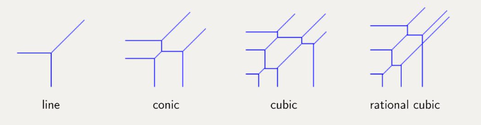
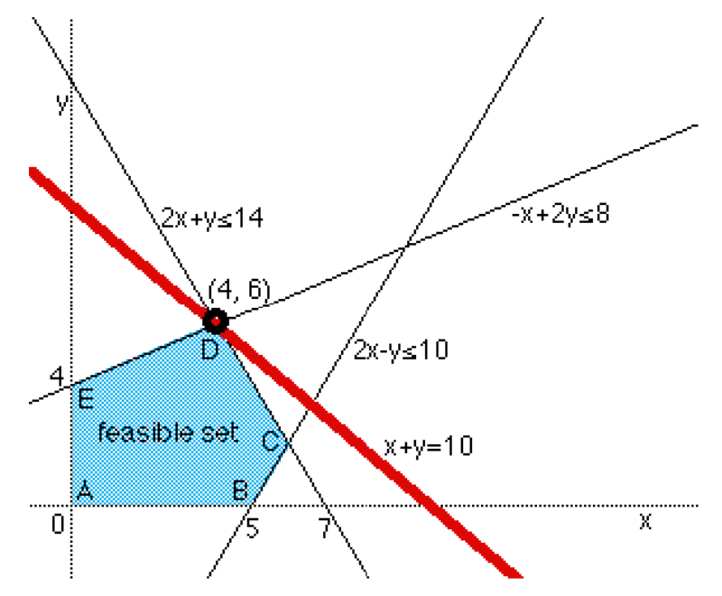
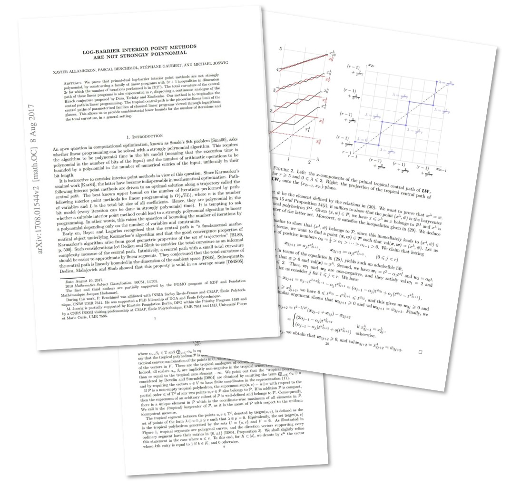
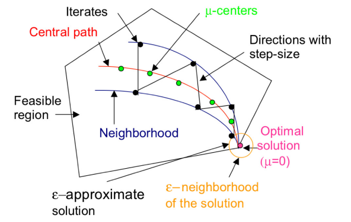
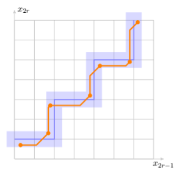
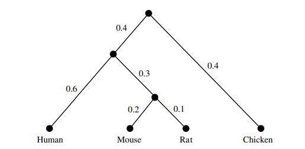

A Tropical Trip Through Smale’s 9th Problem and More
Holland Elizabeth
TMT Conference 2024
Tropical algebra
Tropical geometry concerns itself with the tropical semiring
\[ \mathbb{T} = (\mathbb{R} \cap \{-\infty\} , \oplus, \otimes) \]
which is equipped with the operations
\[
\begin{aligned}
x \oplus y & = \max(x, y) \\
x \otimes y & = x + y
\end{aligned}
\]
Examples of tropical operations:
(additive identity) $-\infty\ \oplus x = x$
(multiplicative identity) $0 \otimes x = x$
Tropical Polynomials
Tropical polynomials are piecewise linear functions with a finite number of linear pieces
Def: A tropical polynomial in 2 variables $x,y$ is an expression of the following form
\[
\bigoplus_{(i,j) \in S} (c_{i,j} \odot x^{i} \odot y^{j})
\]
where $S$ is the set of all exponent pairs $(i,j) \in \mathbb{Z^2}$ and $c_{i,j} \neq -\infty$,
Examples of tropical polynomials:
\[
\begin{aligned}
&0 \oplus x \oplus y \quad \Rightarrow \quad \max \{ x, y, 0 \} \\
&\left(3 \odot y\right) \oplus x \oplus \left(-5 \odot x^3\right) \quad \Rightarrow \quad \max \{ 3+y, x, -5+3x \} \\
\end{aligned}
\]
Tropical Curves in the Plane
Def:
A tropical polynomial \( p(x_1,\ldots, x_n) \) vanishes at a point \( (a_1,\ldots,a_n) \) if the maximum in \( p(a_1,\ldots,a_n) \) is achieved at least twice.
Example (the Tropical Line):
For \( f(x,y) = 0 \oplus x \oplus y \), the maximum is achieved at least twice if
\[
\begin{aligned}
x = y >= 0, x = 0 >= y, y = 0 >= x
\end{aligned}
\]
If we draw these piecewise functions in the plane, we obtain the polynomial's tropical curve

Tropical Curves in the Plane

More examples of tropical curves of different degrees
Smale’s 9th Problem
Does linear programming admit a strongly polynomial algorithm?
Linear programming
Find a vector $\mathbf{x}$ that maximizes $\mathbf{c}^T \mathbf{x}$ subject to the constraints $\mathbf{A}\mathbf{x} \leq \mathbf{b}$ and $\mathbf{x} \geq \mathbf{0}$

Strongly polynomial
- polynomial time in the bit model
- total number of arithmetic operations is polynomial
Linear Programming Algorithms
Simplex Method
Finds an optimal solution by traversing the edges between vertices on the feasible region
• Worst-case exponential complexity
Interior Point Methods
A class of linear programs which follow the central path within the feasible region to find an optimal solution
Possibly strongly polynomial?
Log-barrier interior point methods are not strongly polynomial

Essence of the proof
• Construct a family of counter examples with 3r + 1 constraints in dimension
2r for r > 0
• Tropicalize the central path of the example programs
• Approximate the tropical central path by tropical segments
• Lower bound on number of tropical segments needed \(<=>\) Lower bound on number of iterations of the program
Final result: the number of iterations is exponential with order $O(2^r)$

The algebraic central path

The tropicalized central path
This approach is likely to extend to other interior point methods
Other applications of tropical geometry
• Study the topology of phylogenetic trees using tropical geometry 
• Tropical geometry was used by economist Paul Klemperer to design auctions used by the Bank of England during the financial crisis in 2007 to allocate money to the UK financial system
• Deep learning interpretability, optimisation of mobile networks, and much more!
Final thoughts
• Introduced tropical geometry
• Discussed its use in an open linear programming problem
• Discussed other fascinating applications
References
• R. Morrison, "Tropical geometry," 2019. [arXiv:1908.07012]
• X. Allamigeon, P. Benchimol, S. Gaubert, and M. Joswig, "Log-Barrier Interior Point Methods Are Not Strongly Polynomial," SIAM Journal on Applied Algebra and Geometry, vol. 2, no. 1, pp. 140–178, Jan. 2018. [DOI: 10.1137/17m1142132]
• E. Brugallé, I. Itenberg, G. Mikhalkin, and K. Shaw, "Brief introduction to tropical geometry," 2015. [arXiv:1502.05950]